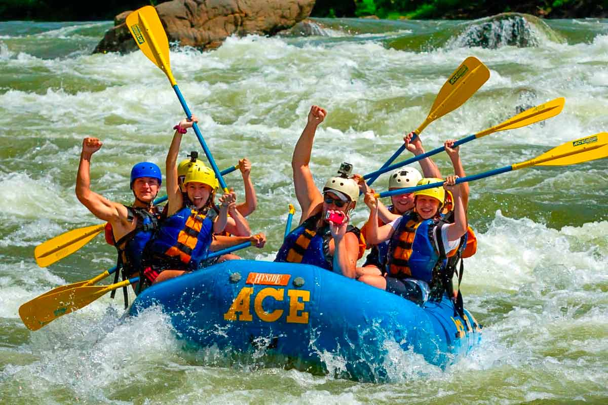
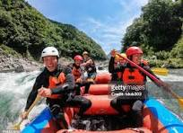

White Water Rafting
Our Mission

At Rapids Rush Rafting, our mission is to ignite the spirit of adventure and foster a deep connection
with nature through exhilarating white water rafting experiences. We are committed to providing our
guests with safe, thrilling, and unforgettable adventures that leave a lasting impression and create
lifelong memories. Driven by our passion for exploration and our respect for the natural world, we
strive to inspire a sense of awe and wonder in every individual who joins us on the river. With
expert
guides leading the way, we navigate the untamed waters of some of the most spectacular rivers on the
planet, offering an immersive journey through stunning landscapes and heart-pounding rapids But our
mission goes beyond just providing thrilling adventures. We are dedicated to promoting environmental
stewardship and conservation, working tirelessly to protect the rivers and wilderness areas that we
call
home. Through sustainable practices and responsible tourism initiatives, we aim to preserve these
precious ecosystems for future generations to enjoy At Rapids Rush Rafting, we believe that
adventure
has the power to transform lives and connect people with the world around them. Whether you're a
seasoned rafter or a first-time adventurer, we invite you to join us on the river and experience the
thrill of a lifetime with Rapids Rush Rafting. Embark on an unforgettable journey, forge
unforgettable
memories, and discover the true essence of adventure with us
History
Established in 1995, Rapids Rush Rafting was born from a passion for adventure and a love for the great
outdoors. It all began when our founder, Jake Anderson, embarked on a thrilling rafting expedition down
the roaring rapids of the Colorado River. Captivated by the adrenaline rush and mesmerized by the
breathtaking beauty of the rugged landscapes, Jake was inspired to share this exhilarating experience
with the world. With unwavering determination and a dream in his heart, Jake set out to establish Rapids
Rush Rafting, a company dedicated to providing unforgettable white water rafting adventures. Starting
from humble beginnings with just a handful of rafts and a small team of experienced guides, Jake's
vision quickly grew into a thriving business known for its commitment to safety, excellence, and
unparalleled excitement.
Over the years, Rapids Rush Rafting has become synonymous with adventure, attracting thrill-seekers and
nature enthusiasts from all corners of the globe. From the thundering rapids of the Grand Canyon to the
meandering rivers of the Pacific Northwest, our expeditions offer a thrilling journey through some of
the most breathtaking natural landscapes on Earth. But our story doesn't end there. As stewards of the
environment, we are deeply committed to preserving the pristine beauty of the rivers and wilderness
areas we explore. Through sustainable practices and eco-friendly initiatives, we strive to minimize our
environmental footprint and protect these precious ecosystems for future generations to enjoy.
Today, Rapids Rush Rafting continues to push the boundaries of adventure, offering an unparalleled white
water rafting experience that is as exhilarating as it is unforgettable. Join us on the river and embark
on the adventure of a lifetime with Rapids Rush Rafting!